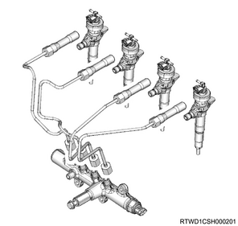
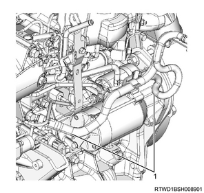

Common rail (fuel rail) assembly installation (4JJ1)
1. Common rail (fuel rail) assembly installation
1. Install the common rail (fuel rail) assembly to the cylinder block.
Note
- Install together with the common rail (fuel rail) bracket.
- Tighten in the order shown in the diagram.
Caution
- Do not grasp the pressure sensor during work.
- Be careful not to damage the connector unit of the pressure sensor.
Tightening torque： 25 N・m { 2.5 kgf・m / 18 lb・ft }

- Vacuum pipe
- Common rail (fuel rail) bracket
- Common rail (fuel rail) assembly
2. Vacuum pipe installation
1. Install the vacuum pipe to the cylinder block.
Tightening torque： 25 N・m { 2.5 kgf・m / 18 lb・ft }
3. Swirl control solenoid valve installation
1. Connect the vacuum hose to swirl control solenoid valve.
2. Install swirl control solenoid valve to the common rail (fuel rail) bracket.
Tightening torque： 15 N・m { 1.5 kgf・m / 11 lb・ft }
3. Connect the harness connector to swirl control solenoid valve.
4. Injection pipe installation
1. Apply the engine oil to the injection pipe.
Note
- Apply engine oil to the injector side sleeve nut threaded portion and the O-ring of the injector.
2. Temporarily tighten the injection pipe to the injector and the common rail (fuel rail) assembly.
Note
- Temporarily tighten the sleeve nut by hand until the nut does not turn.

3. Temporarily tighten the clip to the injection pipe.
4. Securely tighten the injector clamp to the cylinder head.
Tightening torque： 26 N・m { 2.7 kgf・m / 19 lb・ft }
5. Securely tighten the injection pipe to the injector and the common rail (fuel rail) assembly.
Tightening torque： 29.5 N・m { 3.0 kgf・m / 22 lb・ft } Injector side
Tightening torque： 29.5 N・m { 3.0 kgf・m / 22 lb・ft } Common rail (fuel rail) side
Caution
- Do not reuse the injection pipe.
6. Securely tighten the clip to the injection pipe.
Tightening torque： 10 N・m { 1.0 kgf・m / 89 lb・in }
5. FRP sensor connect
1. Connect the connector to the FRP sensor.
6. Leak-off pipe installation
1. Install the leak-off pipe to the fuel supply pump and the common rail (fuel rail) assembly.
Tightening torque： 10.3 N・m { 1.1 kgf・m / 91 lb・in }

- Leak-off pipe
7. Leak off pipe installation
1. Install the harness bracket to the inlet manifold and the common rail (fuel rail) bracket.
2. Install the leak-off pipe to the inlet manifold.
Tightening torque： 25 N・m { 2.5 kgf・m / 18 lb・ft }

3. Connect the fuel leak-off hose to the leak-off pipe.
4. Connect the vacuum hose to the vacuum pipe.
8. Vacuum hose connect
1. Connect the vacuum hose to the vacuum pipe.
9. Fuel hose connect
1. Connect the fuel hose to the fuel supply pump.

- Fuel hose
2. Connect the fuel hose to the leak-off pipe.
10. Fuel feed pipe installation
1. Install the fuel feed pipe to the fuel supply pump and the common rail (fuel rail) assembly.
Tightening torque： 29.5 N・m { 3.0 kgf・m / 22 lb・ft }

- Fuel feed pipe
Caution
- Do not reuse the fuel feed pipe.
11. Starter motor installation
1. Install the starter motor to the rear plate.
Tightening torque： 94 N・m { 9.6 kgf・m / 69 lb・ft }
2. Connect the earth cable to the starter motor.
12. Front propeller shaft assembly installation
13. Battery ground cable connect
1. Connect the battery ground cable to the battery.
2. Close the engine hood assembly.
3. Lower vehicle.